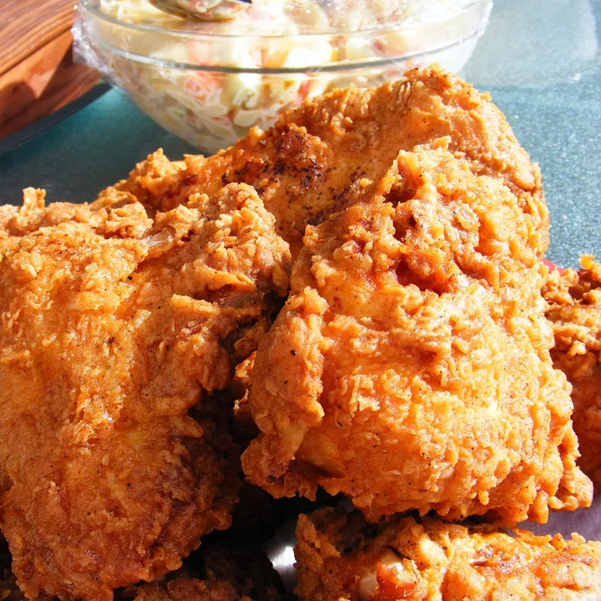

Fried Chicken Recipe

Description
Fried chicken, also known as Southern fried chicken, is a dish consisting
of chicken pieces that have been coated with seasoned flour or batter and
pan-fried, deep fried, pressure fried, or air fried. The breading adds a
crisp coating or crust to the exterior of the chicken while retaining
juices in the meat.
Ingredients
- Chicken
- Buttermilk
- Flour
- Oil
- Seasonings
Steps
-
Combine the flour, paprika, salt, and pepper in a zip-top bag. Seal the
bag and shake until well-combined.
-
Pour buttermilk into a shallow bowl, then dip the chicken (on both
sides) until it's completely soaked in buttermilk. Place the soaked
chicken in the bag with flour mixture, seal, and shake well to coat
-
Transfer the coated chicken to a baking sheet, and cover. Allow the
flour coating to become a paste-like consistency.
- Pour the oil in a skillet and bring it to high heat.
-
Brown the chicken on both sides, then reduce the heat, cover the
skillet, and cook for about 30 minutes. Remove the cover, return the
heat to high, and fry until extra crispy.
- Drain the chicken on paper towels.